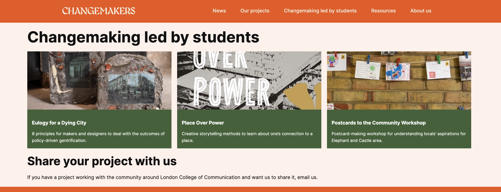
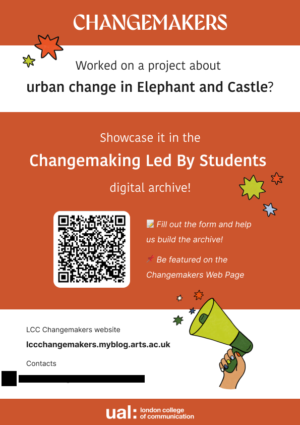

Changemaking Led By Students focuses on building strong, mutually beneficial relationships between London College of Communication (LCC) - UAL students and local organisations supporting marginalised communities, especially around the area of Elephant and Castle. It aims to integrate real-world community challenges into students’ learning experiences.

Chiara led this project from conception to delivery, overseeing its development as project leader and ensuring its alignment with both student experience and community engagement goals.
The main outcome of this project is a digital educational space that collects and showcases students’ research and projects related to local urban transformation and social issues.
This publicly accessible archive highlights goals, outcomes, and includes multimedia content and links to partners, amplifying the impact of student work.
“Great to have as a resource and archive to help platform work, inspire future students and also good for avoiding potential replication of work.”